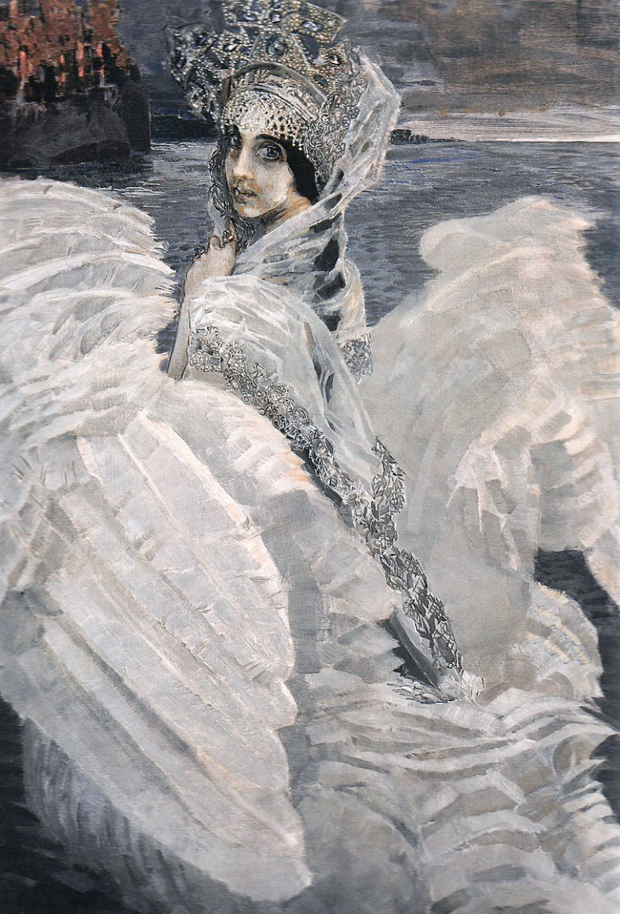

Русский художник рубежа XIX–XX веков, работавший практически во всех видах и жанрах изобразительного искусства: живописи, графике, декоративной скульптуре и театральном искусстве.
Михаил Александрович Врубель родился 17 марта 1856 года в Омске, где тогда служил его отец.Частые роды и климат Омска привели к преждевременной смерти матери от чахотки в 1859 году, когда Михаилу было три года.

Гимназию Михаил Врубель поступил в Петербурге (отец тогда стал слушателем Военно-юридической академии) — это была Пятая городская гимназия, в которой постоянно модернизировали методики преподавания, особое внимание уделяли древним языкам, литературному развитию старшеклассников, были введены уроки танцев и гимнастики.
После окончания гимназии с золотой медалью ни сам Врубель, ни его родители не помышляли о карьере художника. Было решено отправить его в Петербургский университет, расходы на проживание и пропитание брал на себя Н. Х. Вессель, на квартире которого Михаилу предстояло жить. Решение поступать именно на юридический факультет по-разному оценивалось биографами, например, А. Бенуа, учившийся там же, полагал, что сказывались и семейная традиция, и попросту «так полагалось» в их социальном окружении.
Особенности стиля
Художественный язык Врубеля формировался в изобразительной системе стиля модерн символического направления, а также основывался на предметности и осязательной ценности формы, заимствованной художником у традиции русского академического искусства.
Автопортрет с жемчужной раковиной, 1905
В его творчестве соединяются две тенденции реалистическая и романтическая, на основе данного соединения возникает семантическая двузначность образов. Символ у мастера — это знак с бесконечным множеством трактовок. Созданные им образы многогранны, это символы, вызывающие у зрителя многочисленные ассоциации.
Основные работы
В начале ХХ века живопись Врубеля стала органической частью русского модерна. «За известность на художественном поприще» 28 ноября 1905 года ему было присуждено звание академика живописи — как раз к моменту полного прекращения художественной активности. Рассмотрим самые значительные из его работ.
Икона «Богоматерь с младенцем» была создана в 1884–1885 годах для оформления одноярусного мраморного иконостаса Кирилловской церкви в Киеве. Именно эта работа сделала Врубеля известным широкой публике и послужила отправной вехой в его последующей карьере художника и декоратора. Несмотря на то, что образ выполнен согласно всем канонам православной иконографии, критики отмечают его выразительность и необычность.

Богоматерь с младенцем, 1884-1885
Искусствоведы, критики и художники единогласно признали успех не только образа Богоматери, но и других работ, выполненных Врубелем в Кирилловской церкви. Так, например, известный коллекционер П. М. Третьяков хвалил эту работу Врубеля, специально приезжал в Киев её посмотреть и сокрушался, что не может приобрести для своей коллекции, а критик и галерист С. К. Маковский считал, что дебютная работа Врубеля в Кирилловской церкви является «высочайшим достижением Врубеля», и подчёркивал, что достижение это «глубоко национальное», отвергая обвинения Врубеля в «нерусском (польском) происхождении» и «эстетическом космополитизме», и искусствовед и критик А. Н. Бенуа также отмечал мастерство Врубеля и подчёркивал, что в сравнении с работами Врубеля в Кирилловской церкви фрески В. М. Васнецова «кажутся поверхностными иллюстрациями».
На картине «Девочка на фоне персидского ковра» изображена девочка-подросток, одетая в розовое атласное платье, на фоне персидского ковра, руки девочки положены ладонями на розу и богато инкрустированный кинжал — традиционные эмблемы любви и смерти. На шее девочки — жемчужное ожерелье, пальцы рук унизаны перстнями.
Девочка на фоне ковра, 1886
К нашему времени краски картины заметно потемнели. Врубель часто торопился в работе и нарушал технологию, используя ретушные лаки, которые быстро высушивали поверхность картины. В настоящее время картина экспонируется в собрании Киевского музея русского искусства.
В 1900 году Врубель обращается к теме «Демона». Ещё не окончив полотно «Демон летящий», в 1901 году художник начал писать предварительные эскизы к картине «Демон поверженный». Врубель в целом был здоров, хотя окружающие отмечали его раздражительность. Несмотря на в основном отрицательные отзывы критики того времени, его популярность среди ценителей живописи росла.
Демон поверженный, 1902
Картина выполнена на холсте маслом. Фоном ее является горная местность в алом закате. Композиция подчёркивает стеснённость фигуры демона, будто бы зажатого между верхней и нижней перекладинами рамы. Картина написана в индивидуальном стиле Врубеля с эффектом кристаллических граней, что делает его картины более похожими на витражи или панно. Такого эффекта художник добился с помощью плоских мазков, выполненных мастихином.
В 1891 году Врубель написал тридцать иллюстраций к юбилейному изданию сочинений Лермонтова под редакцией Кончаловского. Большая часть работ относилась к поэме Лермонтова «Демон», о которой мы уже упоминали выше. Эскиз это картины был создан в 1890 году, хранится в Государственной Третьяковской галерее.
Демон сидящий, 1890
Демон — образ силы человеческого духа, внутренней борьбы, сомнений. Трагически сцепив руки, он сидит с печальными, направленными вдаль огромными глазами, в окружении невиданных цветов. Фоном картины является горная местность в алом закате. Композиция подчёркивает стеснённость фигуры демона, будто бы зажатого между верхней и нижней перекладинами рамы.
Картина «Пан» написана в 1899 году, относится к так называемому «Сказочному циклу» и считается его вершиной. Написана во время пребывания художника и его жены в имении княгини Марии Тенишевой (село Хотылево, Орловская губерния). Поначалу Врубель начал писать портрет жены на фоне лесного пейзажа, однако не окончил его и буквально за несколько дней написал на том же холсте новую картину. Источником вдохновения для Врубеля послужил рассказ Анатоля Франса «Святой сатир».
Пан, 1899
На картине изображён Пан — персонаж древнегреческой мифологии. Однако, он изображён на фоне типичного северо-российского пейзажа (равнина, кривая берёза, лес, река), что роднит его с образом лешего.
Картина посвященная персонажу оперы Римского-Корсакова «Сказка о царе Салтане» (по роману Пушкина). А. П. Иванов говорил об этой картине: «Не сама ли то Дева-Обида, что, по слову древней поэмы, „плещет лебедиными крылами на синем море“ перед днями великих бедствий?», имея в виду персонаж из «Слова о полку Игореве». Александр Блок также очень любил эту картину и всегда держал её репродукцию в кабинете в Шахматове. Ею навеяно большое стихотворение с подзаголовком «Врубелю».
Царевна-Лебедь, 1900
Царевна с полотна Врубеля таинственна и загадочна, лицо её печально. Изображена Царевна-Лебедь на фоне спускающихся над морем сумерек, узкой полоски заката на горизонте и далёкого города (фоном послужили декорации к спектаклю — город Леденец, выполненные художником).
Золотое солнце, белые оттенки цветов, красное небо, оранжевые блики заката должны настраивать на позитивный лад, но они только усугубляют общее впечатление. Создается ощущение некой грубой силы, которая вторглась в хрупкий мир природы.
«...И вдруг на наших глазах космические штрихи на бумаге стали постепенно приобретать кристаллическую форму. ...перед взором моим предстал плод высочайшего мастерства, произведение удивительной внутренней экспрессии, ясного конструктивного мышления, обличенного в орнаментальную форму».
М. А. Врубель
Если вы не заметили ничего подозрительного на этом сайте, ознакомьтесь с книгами о Михаиле Врубеле — узнайте о его работах больше!